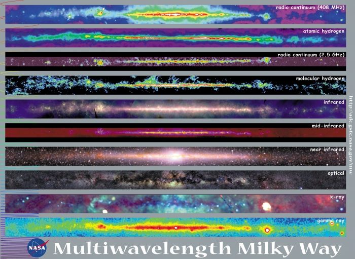
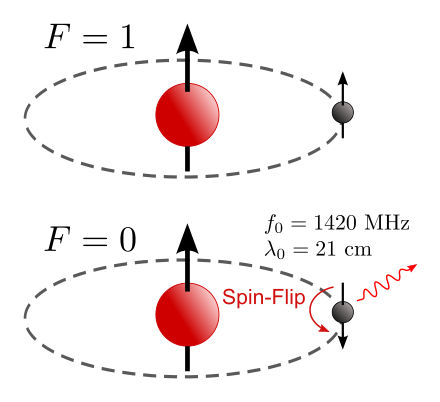

This page serves as a brief introduction to the science background for the base science case for CHART. There are many potential radio
projects one could do with the simple instrument we describe in the tutorials, but we will describe a basic "Milky Way Measurement" lab here.
The Milky Way
These tutorials will walk the user through making measurements of the motion of the Milky Way. Most users are likely familiar with the
basic optical view of our own galaxy- however, many may never have seen the Milky Way outside of photographs. Optical observations are best done
under clear skies from dark rural locations, and most people live in cities where air quality can be low or clouds are common. About 80% of North
Americans cannot see the Milky Way from their homes. However, radio frequency observations can be done from cities, and can be performed during
the day time. Additionally, radio frequency observations can illuminate different properties of astronomical objects that cannot
be observed with low-cost optical instruments. The image below shows the milky way at different wavelengths. You can see from the image that the optical view of the Milky Way mostly shows
starlight obscured by dust. However, at radio wavelengths, we can see through that dust.
Our galaxy is a "barred spiral galaxy", meaning the matter in the galaxy is structured in a central bar-shape with spiral arms. With radio observations, we can map the
rotation of these spiral arms, gaining insight into the way our galaxy moves. We can use this information to reconstruct the "rotation curve" of
the Milky Way, which shows the velocity of the matter as a function of distance from the center of the galaxy.

image credit: NASA Goddard Spaceflight Center
The 21-cm Line
When viewing the Milky Way at optical wavelengths, either with the naked eye, a telescope, or a camera, we are detecting emission from luminous
sources in the galaxy, such as stars. However, material in the Milky Way emits at different wavelengths depending on it's composition. The easiest radio frequency emission
to detect comes from clouds of neutral gas that reside in the spiral arms of the galaxy. These clouds are made of neutral hydrogen,
which has one proton and one electron. This proton and electron each have a quantum mechanical property called a "spin", and the spins can be aligned with
one another or anti-aligned. The anti-aligned state will be slightly lower in energy than the aligned state, and we know from the laws of physics that
lower energy states are preferred. This means that if an atom of neutral hydrogen is excited into the aligned state by some incoming energy, after some
time there is a probability that the atom will spontaneously revert to the anti-aligned state, emitting the extra energy as a photon with a wavelength of
21-cm, or a frequency of 1420.4 MHz. This transition has a relatively low probability of occuring, but as Hydrogen is the most abundant element in the
universe, any part of the galaxy with neutral Hydrogen is emitting many of these photos at any given time. Due to it's characteristic frequency of 1420.4 MHz,
we can detect this emission with a radio telescope, and investigate the resulting spectrum for information about the Hydrogen clouds.

Doppler Shift and Milky Way Motion
The most familiar application of the Doppler shift concept to most users will be sound. For example, when an ambulance drives by an observer standing still,
the observer percieves a change of pitch as the vehicle approaches and when it recedes. Compared to the frequency of the actual siren,
the observed frequency is higher when the vehicle is approaching, the same when it passes exactly by the observer, and lower when it moves away.
The Doppler shift concept also applies to astronomical motion. Due to
our location embedded in the Milky Way, some parts of the galaxy are
moving towards or away from us as observers. This is complicated by the fact that we as observers are also in motion with respect to the
galactic center. The relative motion of the Earth with respect to the observed hydrogen gives way to a Doppler shift in the 21cm radiation as it appears at our telescope. We see this as a change in the observed frequency of the 21cm, or 1420.4 MHz, radiation. If we remove our own
relative motion from the equation, we can directly map this Doppler shift to the velocity of the Hydrogen with respect to the galactic center. If we know the distance of the hydrogen from the galactic center, we can then make a rotation curve.
Fundamentally, the rotation curve is telling us how fast gas is moving at different orbits around the Galactic Center.
The figure below shows the rotation curve of the galaxy M33, as measured by stellar velocities and hydrogen gas. It also shows the predicted rotation curve from Keplerian motion, just by adding up the mass of all the visible stars
and predicting what their rotation should look like. You will notice the measured rotation curve and the predicted rotation curve don't line up very well. Astronomers know about this discrepancy, and the leading hypothesis is that
their must be mass that we cannot see that is causing the rotation curve to look different. This is referred to as dark matter.
.png)
image credit: Mario De Leo, CC BY-SA 4.0
With a simple instrument, you can measure the rotation curve of the Milky Way from your own backyard! See the tutorials section, which will walk you through building your
own radio telescope and taking Milky Way measurements.